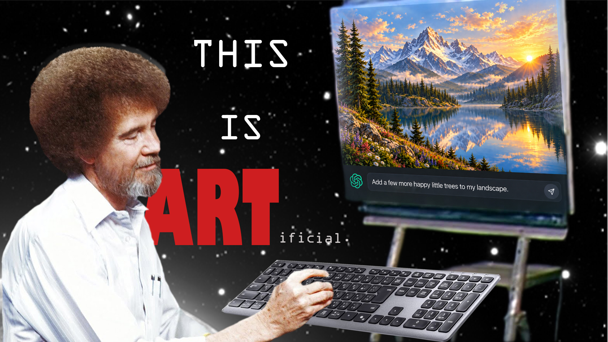

Details
Digital Mashup
Adobe Photoshop
Dimensions: 1920 × 1080 px
About the Work
My mashup shows Bob Ross using a keyboard to prompt AI instead of painting with a brush. I emphasized “ART” inside the word “artificial” to express my skepticism about calling AI-generated images art. The work asks whether writing a prompt alone makes someone an artist.
I chose this subject because I have been thinking about AI-generated art for a long time. I found the source images online and combined Bob Ross, a keyboard, an easel, and a landscape in Photoshop. I was not sure how to visually represent AI, so I used the familiar ChatGPT logo because most people would recognize it. I used layers, selection tools, masks, scaling, and text to create the mashup. I was also inspired by Barbara Kruger's use of bold text to change how an image is understood.
The meaning comes from seeing Bob Ross prompt an image instead of painting it himself. He was known not only for his landscapes, but also for his process, personality, and connection with his audience. Replacing his brush with a keyboard removes the process that made his work feel personal. My work reflects my belief that AI can be useful for learning or technical help, but generating an image is not the same as creating it yourself.